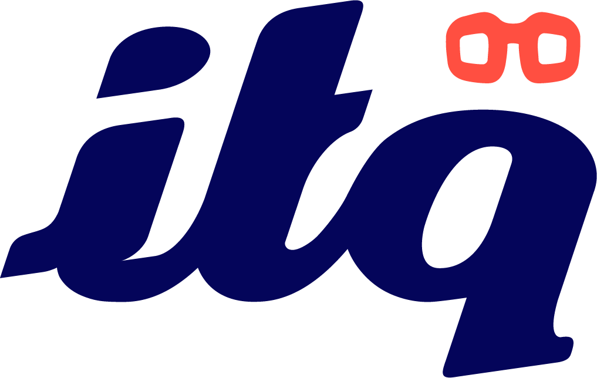

vSphere VLAN TesterAutomated network validation for VMware vSphere environments. Build config blocks visually, import port groups from vCenter and NSX, and run targeted VLAN and connectivity tests.
Build the VLANS=() config block for vlan-test.sh. Import port groups from vCenter and NSX, fill in IP addresses, and generate the config in one click.
Build the TARGETS=() block for wsl-network-test.sh and ps-network-test.ps1. Import VMs from vCenter, set HTTP targets and expected status codes.
vlan-test.sh Bashwsl-network-test.sh Bashps-network-test.ps1 PowerShellGet-PortGroupData.ps1 PowerShellGet-VMData.ps1 PowerShell